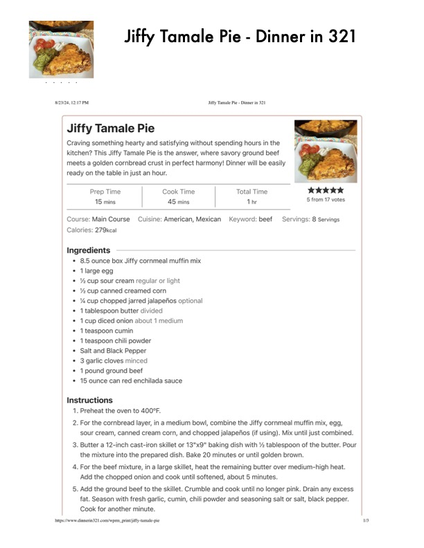

Jiffy Tamale Pie - Dinner in 321

Original cookbook page 660
Ingredients
- * 8.5 ounce box Jiffy cornmeal muffin mix
- * (large egg
- * Y%cup sour cream regular or light
- * % cup canned creamed corn
- * Y% cup chopped jarred jalapefios optional
- 1 tablespoon butter divided
- * 1 cup diced onion about 1 medium
- * 1teaspoon cumin
- * 1 teaspoon chili powder
- Salt and Black Pepper
- * 3 garlic cloves minced
- * 1 pound ground beef
- * 15 ounce can red enchilada sauce
Instructions
- Preheat the oven to 400°F.
- For the cornbread layer, in a medium bowl, combine the Jiffy cornmeal muff sour cream, canned cream corn, and chopped jalapefios (if using). Mix until
- Butter a 12-inch cast-iron skillet or 13"x9" baking dish with % tablespoon of the mixture into the prepared dish. Bake 20 minutes or until golden brown.
- For the beef mixture, in a large skillet, heat the remaining butter over mediur Add the chopped onion and cook until softened, about 5 minutes.
- Add the ground beef to the skillet. Crumble and cook until no longer pink. Di fat. Season with fresh garlic, cumin, chili powder and seasoning salt or salt, I Cook for another minute. hitps://www dinnerin321 com/wprm_printjiily-tamale-pie
Recipe #660 from collection